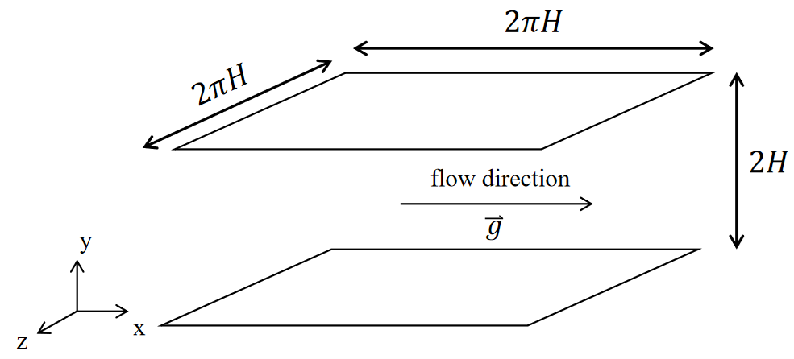
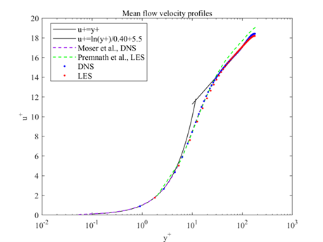
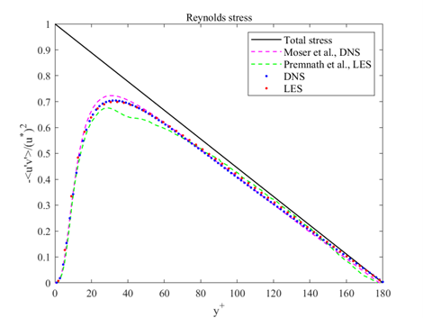
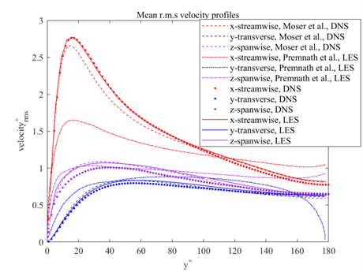
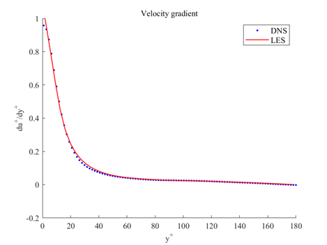

Large-eddy Simulation with Wall Model in Lattice Boltzmann Method for Turbulent Channel Flow
View PDF of Undergraduate Thesis
Turbulent flows are essential in various engineering applications. Accurately predicting these flows is key to optimizing design and performance. This research focuses on simulating turbulent channel flow using a combination of Large-eddy Simulation (LES) and wall models within the Lattice Boltzmann Method (LBM). This approach enables efficient and accurate simulation of turbulence with fewer computational resources than Direct Numerical Simulation (DNS).
We implemented the Smagorinsky sub-grid scale model and the Musker wall model into a customized DNS code. LES captures large-scale turbulent structures and models smaller scales, while the wall model provides accurate near-wall flow behavior, reducing grid resolution requirements.

The LES method captured streamwise velocity profiles that matched well with DNS and published data, accurately resolving both viscous sublayer and logarithmic layer flows.

Reynolds stress profiles and root-mean-square velocity distributions also aligned with DNS data, confirming the model’s ability to replicate essential turbulence characteristics. The near-wall velocity gradient, modeled via the Musker wall function, matched theoretical expectations without requiring a high-resolution grid.



Comparisons of turbulent viscosity revealed that the LES approach could approximate the turbulent-to-molecular viscosity ratio with accuracy. This demonstrates that LES plus wall modeling in LBM provides a robust and efficient framework for simulating turbulent channel flows. The approach holds promise for more complex turbulent simulations, including higher Reynolds numbers and urban flow scenarios.